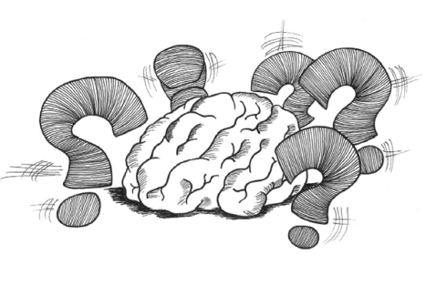
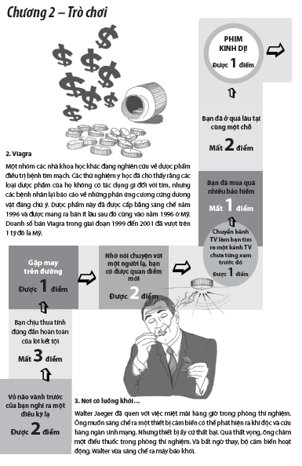

2. Trí Óc Bị Ngạc Nhiên

“A, tâm hồn – nơi câu trả lời hư ảo đọng lắng
Khi cuộc sống mãi chăm chăm vào những điều chắc chắn”
George Meredith
 Tận hưởng điều không mong đợi
Tận hưởng điều không mong đợi
Mới vừa ăn trưa xong thì người bán hàng, hãy gọi anh ta là Mario, bước vào văn phòng trang bị nội thất đơn giản cho một cuộc tiếp xúc bán hàng. Những ông khách của Mario mỉm cười chào và mời anh ta ngồi xuống chiếc ghế sôfa bởi họ đã ngồi cả xuống hai chiếc ghế bành. Áo sơ mi và cà vạt của Mario tương phản hoàn toàn với chiếc áo Hawaii bình thường và quần short của những người khách hàng tiềm năng, nhưng điều đó dường như không làm Mario phiền lòng. Anh bắt đầu nói chuyện với những người khách về một sản phẩm mới và những người khách lắng nghe thật chăm chú. Vì một lý do kỳ lạ nào đó, những người khách đã yêu cầu ghi hình lại cuộc nói chuyện, do đó ngồi bên cạnh Mario là một tay quay phim được trang bị một máy quay phim video.
Mario nói một câu chuyện ngắn gì đó.
Họ cùng cười lớn.
Bỗng nhiên:
“PẰNG – PẰNG – CHÍU!”
Đạn bắn từ cửa sổ làm thủng lỗ chỗ trong văn phòng.
Hai trong số mấy ông khách bị trúng đạn và quằn quại dữ dội trước khi họ ngã xuống sàn trong một vũng máu.
Mario nhăn nhó hoảng sợ và co rúm người trên ghế sofa, hai tay ôm lấy đầu.
Đôi mắt anh mở to kinh hãi.
Miệng anh há hốc vì kinh ngạc.
Cơ thể anh đông cứng trong tư thế nửa phòng thủ, nửa co tròn như một bào thai.
Người quay phim phóng to gương mặt anh ta. “Hãy hét lên – bạn đang trong chương trình Panic Face King!”
Người ta không rõ clip YouTube nổi tiếng này là một chương trình truyền hình thực tế của Nhật Bản hay là tác phẩm của một nghệ sĩ nghiệp dư nhiều tiền. Tuy nhiên, mục tiêu của chương trình Panic Face King là làm cho các nạn nhân của nó trình ra một “gương mặt hoảng loạn” nhằm tạo sự thích thú cho khán giả.
Lý do những sự bất ngờ khó chịu như thế này lại rất hiệu quả trong việc tạo ra một khuôn mặt hoảng sợ là vì phản ứng của chúng ta là hoàn toàn không tự chủ. Cũng giống như việc chúng ta giật nảy lên khi bị giật mình hoặc cười phá lên khi thấy điều gì đó buồn cười xảy ra trước mắt.
Câu hỏi là tại sao những phản ứng không tự chủ này lại xảy ra và chúng có ý nghĩa gì.
Câu trả lời bắt đầu với hai quá trình khác nhau trong bộ não. Hãy tưởng tượng có một người nhảy ra từ sau một cái cây để hù bạn khi bạn đang đi bộ trong rừng. Dù cho đó chỉ là một người bạn thân thì phản ứng đầu tiên của bạn vẫn là cảm giác sửng sốt và rối loạn tột cùng, dẫu nó chỉ kéo dài trong vài phần nghìn giây. Sau đó, bạn nhận ra rằng đó chỉ là Bob và bạn thư giãn, có lẽ có hơi khó chịu vì tính khí hài hước kiểu trẻ con của Bob.
Hai phản ứng này – hoảng sợ rồi thư giãn – không phải là kết quả của việc bộ não phản ứng lại hai luồng thông tin khác nhau. Trước sau gì cũng chỉ là Bob thôi. Thay vào đó, đây là kết quả của việc hai phần khác nhau trong bộ não xử lý cùng một thông tin.
Quá trình đầu tiên thì nhanh chóng và thuộc về trực giác, diễn ra ở vùng có tên là não bò sát chuyên nhận biết phản xạ .
Quá trình thứ hai thì chậm hơn và có suy nghĩ, diễn ra ở các phần khác của bộ não.
Bob nhảy ra để làm chúng ta hoảng sợ và bản năng của chúng ta phản ứng lại, xem anh ta là một mối đe dọa. Toàn bộ hệ thống của chúng ta được kích hoạt hết mức để hoặc là chiến đấu hoặc là bỏ chạy.
Tiếp theo, chúng ta thật sự dùng các giác quan của mình để phân tích tình hình và nhận ra nụ cười tinh quái quen thuộc của Bob. Được giải tỏa cơ thể sản xuất ra kích thích tố giúp chúng ta thư giãn.
Quá trình tương tự cũng diễn ra khi chúng ta cười đùa. Hãy xem ví dụ sau đây:
“ Hai gã thợ săn đang đi vào rừng thì một trong số họ ngã vật ra đất. Hắn ta dường như không còn thở nữa còn mắt thì trợn ngược.
“Gã thợ săn kia rút điện thoại ra và gọi cấp cứu. Gã nói hổn hển với nhân viên trực tổng đài: ‘Bạn tôi chết rồi! Tôi phải làm sao đây?’
“Nhân viên trực tổng đài nói với giọng bình tĩnh và nhẹ nhàng: ‘Bình tĩnh đi. Tôi có thể giúp anh. Trước tiên, hãy xem anh ta đã chết thật hay chưa’
“Im lặng một lúc, rồi một tiếng súng vang lên. Giọng nói của gã thợ săn trở lại trên điện thoại. Gã nói: ‘Rồi, bây giờ làm gì nữa?’” 1
Câu chuyện trên đây đã được bình chọn – một cách khá kiềm chế – như là truyện cười vui nhộn nhất trên toàn thế giới trong một cuộc khảo sát năm 2002. Bất kể bạn có thấy câu chuyện đặc biệt này thú vị hay không, các lý thuyết gia đều đồng ý rằng thành phần thiết yếu của một truyện cười thành công là “một sự phi lý giữa hai yếu tố có thể được giải quyết theo cách thức khôi hài hoặc bất ngờ”. 2 Trong truyện cười trên, sự phi lý là sự hiểu lầm giữa anh thợ săn và người nhân viên ở tổng đài cấp cứu thể hiện qua ý nghĩa của câu đối thoại “Hãy xem anh ta đã chết thật hay chưa”.
Một phương pháp phổ biến để tạo ra một hiệu ứng bất ngờ trong các truyện cười là sử dụng con số ba. Hãy xem ví dụ là câu chuyện cười về các đặc điểm quốc gia sau đây.
“Một người Anh, một người Ai-len và một người Scotland cùng đi vào một quán rượu. Mỗi người mua một cốc bia Guinness. Đang lúc họ sắp uống, bỗng dưng có ba con ruồi từ đâu bay đến rớt vào các cốc bia, mỗi con trong một cốc.”
Nhân vật thứ nhất là nhằm thiết lập một loại hành vi . Trong trường hợp này, anh chàng người Anh đã ghê tởm đẩy cốc bia của mình ra xa.
Nhân vật thứ hai là nhằm tạo ra một hình mẫu về hành vi. Trong trường hợp này, anh chàng người Ai-len đã vớt con ruồi chướng mắt ra khỏi cốc bia của mình và tiếp tục uống như không có gì xảy ra.
Nhân vật thứ ba là người phá vỡ khuôn mẫu và làm một điều gì đó bất ngờ. Anh chàng người Scotland nhặt con ruồi ra khỏi cốc bia, đưa nó trên ly bia và rồi bắt đầu hét tướng lên “Nhổ ra! Nhổ ra ngay con kia, mày là tên trộm xấu xa! 3 ”
Những tiến bộ về các kỹ thuật quét não bộ trong vài năm qua đã giảm đi sự bí ẩn và mở ra cánh cửa mới trong việc hiểu về cách thức làm việc của bộ não chúng ta. Ngoài việc xem xét các hệ thống nhận thức ngôn ngữ làm việc của não bộ khi chúng ta nghe truyện cười, các nhà khoa học cũng phát hiện ra rằng các câu truyện cười làm phóng thích ra một liều dopamine vào não. Dopamine là một phần của hệ thống khen thưởng của cơ thể, điều này lý giải sự thoải mái mà chúng ta cảm thấy khi chúng ta “được nghe” một truyện cười. Nói cách khác, chúng ta có thể tận hưởng điều không mong đợi. Điều này lý giải vì sao một số người nghiện phim hoạt hình hài kịch tình huống South Park và một số khác nghiện phim kinh dị. Cả kinh dị và hài hước đều sử dụng những cách giải quyết bất ngờ để tạo nên những phản ứng không tự chủ và những phản ứng này sẽ sản xuất ra dopamine.
Chúng ta có thể tận hưởng điều không mong đợi
Vì sao chúng ta ghét điều không mong đợi
Niềm vui thích chắc chắn không phải là điều duy nhất chúng ta cảm thấy khi đối mặt với những sự kiện không mong đợi và không chắc chắn. Chứ nếu như không phải vậy thì người ta chắc sẽ đâm sầm vào ô tô và ly hôn một cách vô tội vạ để tạo nên cảm giác phấn khích do lượng adrenaline tăng mạnh mang lại. Phản ứng thường thấy khác là căng thẳng, sốc và tổn thương. Ví dụ như, hội chứng rối loạn tâm lý sau chấn thương (RLTL) là một hội chứng ảnh hưởng đến những nạn nhân bị chấn thương cảm xúc trầm trọng, vốn là những người đã trải qua một điều gì đó không ngờ tới gây nên phản ứng cảm xúc tiêu cực mãnh liệt – một tai nạn nghiêm trọng, một cuộc tấn công về thể xác hay sự chạm trán trong khu vực chiến tranh là những nguyên nhân phổ biến đưa đến RLTL. Có một điều đáng lo ngại về sự căng thẳng hoàn toàn không mong đợi. Các nhà khoa học đã nhận thấy rằng những đứa trẻ được sinh bằng phương pháp mổ lấy thai – khi đó chúng phải tiếp xúc ngay tức thì chứ không phải từ từ với sự căng thẳng cảm xúc cao độ với đời sống bên ngoài tử cung – đã có những thay đổi trong DNA của chúng. Điều này có thể giải thích vì sao một số đứa trẻ trên dễ mắc những bệnh miễn dịch như suyễn, tiểu đường và cả ung thư trong cuộc đời sau này. 4
Sự căng thẳng cao độ dường như cũng có khả năng lập trình lại DNA của chúng ta sau này trong cuộc sống. Một nghiên cứu được tiến hành tại Trung Quốc trên những người đã sống sót qua trận động đất lớn ở Tứ Xuyên năm 2008 cho thấy có những thay đổi trong não bộ của những người này, dù là họ tự cảm thấy không bị một tổn thương tinh thần nào. 5 Ngoài ra, khi bị tổn thương cảm xúc đặc biệt nghiêm trọng, não bộ như thể bị đóng lại và chúng ta không thể hình thành ký ức mới được nữa. Đó là lý do tại sao những người đã mục kích các thảm họa và các sự kiện khốc liệt khác có thể không được tin cậy nhiều. 6
Những sự kiện căng thẳng thường có điểm chung là chúng ta không thể kiểm soát được chúng và bản chất con người là ghét tình trạng mất kiểm soát. Một nghiên cứu thường được nói đến là “Ảnh hưởng lâu dài của sự can thiệp có liên quan đến việc kiểm soát trên người cao tuổi sống trong trung tâm từ thiện” đã cho thấy rằng người cao tuổi có xu hướng trở nên nhanh nhẹn hơn, thấy hạnh phúc hơn và sống lâu hơn nếu được bảo rằng họ phải chịu trách nhiệm chăm sóc bản thân mình và được giao cho việc chăm sóc vườn hoa và cây cảnh. Ngược lại, đối với những bệnh nhân tham gia nghiên cứu mà không được giao chăm sóc cây cảnh và được bảo rằng các nhân viên của trung tâm sẽ chịu trách nhiệm chăm sóc họ, những người này trở nên yếu đi và có tỷ lệ tử vong cao hơn. Sự kiểm soát là một lý do không thể tách rời của cuộc sống. Việc mất kiểm soát không chỉ khiến người cao tuổi dường như dễ chết hơn mà nó còn ảnh hưởng đến cách chúng ta nhìn nhận rủi ro và chấp nhận rủi ro. Nghiên cứu cho thấy người ta có xu hướng tự tin thái quá về những rủi ro mà họ có thể kiểm soát (“Tôi sẽ không bao giờ chết trong một tai nạn xe hơi hoặc do ung thư phổi hay chết ở trong chính ngôi nhà của mình”), mặc dù những rủi ro này phổ biến hơn rất nhiều so với các tai nạn gây chết người. Thứ khiến chúng ta hoảng sợ là những điều ta không thể kiểm soát được những sự kiện làm ta lo âu về mặt thống kê thì có lẽ ta ít có khả năng trải qua, chẳng hạn như một tai nạn máy bay, một vụ tấn công khủng bố hoặc bị một tảng băng rơi trúng người – điều có thể xảy ra vào mùa đông ở Thụy Điển. 7
Bản chất con người là ghét tình trạng mất kiểm soát
Vẻ ngoài của sự tỉnh táo
Để tránh mối đe dọa tiềm ẩn từ điều không mong đợi, chúng ta xây dựng các quy tắc ngầm mà chúng ta phải tuân theo. Trong bộ não, các quy tắc đó được gọi là kỹ thuật giải quyết vấn đề dựa trên kinh nghiệm – là các mô hình nhận thức, hay cách gọi phổ biến hơn là định kiến. Tuy nhiên, cách gọi định kiến thường có nghĩa tiêu cực, trong khi nhiều khả năng giải quyết vấn đề dựa trên kinh nghiệm là có ích lợi – giả như khi một con chó có vẻ hung dữ tiến đến gần thì khôn ngoan là ta phải tránh xa nó ra vì chín trong mười con chó trông hung dữ sẽ hung dữ thật sự. Khi đụng đến hành vi thực tế, chúng ta đều bị ràng buộc bởi các thói quen. Giáo sư sinh học thần kinh Lars Olson, Đại học Karolinska ở Stockholm nói “Chúng ta hành xử theo quán tính nhiều hơn ta nghĩ” 8 . Một số thói quen của chúng ta là hiển nhiên, không có điều kiện – chúng ta cần phải ăn, ngủ và uống – nhưng những thói quen khác là kết quả của quá trình hóa học trong não. Những thói quen và các công việc quen thuộc hàng ngày là một biện pháp bảo vệ có tính tiến hóa để chống lại sự căng thẳng cho não. Nếu chúng ta suy nghĩ sâu sắc về một hay mọi sự kiện đến với chúng ta thì cần phải tiêu thụ một lượng lớn năng lượng và làm mức độ căng thẳng gia tăng mạnh mẽ. Do vậy chúng ta giải phóng cho phần lớn bộ não bằng cách sống theo thói quen – với thông tin là chúng ta chỉ sử dụng từ 10 đến 20% năng lực của não bộ khi não đang trong chế độ xử lý các sự việc quen thuộc, thoải mái và tốn ít năng lượng.
Những thói quen và các công việc quen thuộc hàng ngày là một biện pháp bảo vệ có tính tiến hóa để chống lại sự căng thẳng
Các thương hiệu và việc xây dựng thương hiệu là một trong những biểu tượng mạnh mẽ nhất về việc chúng ta yêu thích các thói quen và những công việc quen thuộc hàng ngày. Chuyên gia xây dựng thương hiệu Don Williams nói: “Về bản chất, thương hiệu là sự thoải mái vô ưu; chúng ta mua hàng có thương hiệu do chúng ta thấy an tâm bởi cam đoan của nhà sản xuất, bởi chúng quen thuộc và bởi chúng thường trở thành ‘một phần trong gia đình’”. 9 Các thương hiệu đại diện cho sự giảm thiểu điều không chắc chắn. Thỉnh thoảng chúng ta có thể bắt gặp chính mình trong một tâm trạng phiêu lưu (“Ồ, sushi cũ trong ngày giảm nửa giá kìa! Tôi sẽ mua hết!”), nhưng khi chúng ta mệt mỏi trong việc lựa chọn và chấp nhận rủi ro thì ta thấy thật mừng khi có một cửa hàng McDonald’s ở lối ra bên cạnh hoặc trong quầy bar khách sạn có bán bia Heineken.
Say mê theo đuổi điều kỳ lạ
“Những sinh vật mưu cầu mọi việc theo thói quen hàng ngày và căm ghét hầu hết những điều không mong đợi” sẽ là câu giới thiệu phù hợp khi loài người đăng quảng cáo ở các cột báo tìm bạn bốn phương trên những hành tinh khác. Mặc dù nhiều người trong chúng ta thích thấy bản thân mình là một người ít nhiều yêu sự mạo hiểm và thích thú với việc có những trải nghiệm mới nhưng trong đầu chúng ta lại có một bộ lọc được lắp sẵn và ngăn chúng ta không bị lạc quá xa khỏi con đường mòn quen thuộc. Nó được gọi là vỏ não vành trước, nhưng nó thường được biết đến với biệt danh vòng “Oh Shit!”. Bộ lọc này gắn liền một cách điển hình với sự nhận thức về các lỗi và mâu thuẫn và được kích hoạt khi người ta nhìn, nghe và trải nghiệm một điều gì đó không đúng lắm, một điều gì đó không nên xảy ra. 10 Nói cách khác, vòng “Oh Shit!” là một loại hệ thống miễn dịch với mục đích bảo vệ các suy nghĩ và sự tỉnh táo của chúng ta khỏi các cuộc tấn công kinh hãi bởi những điều vô nghĩa. Nếu chúng ta nhìn thấy mưa rơi hướng ngược lên trời thì những vòng “Oh Shit!” sẽ bắt đầu hoạt động. Chúng ta sẽ nói “Thật là kỳ lạ,” dụi mắt để chắc rằng điều ta đang nhìn thấy là chính xác, và trong hầu hết các trường hợp sẽ nhận ra rằng đó chỉ là một ảo giác. Không phải là mưa rơi hướng ngược lên trời mà chỉ là những giọt mưa nảy lên do đã rơi quá mạnh xuống vỉa hè.
Tuy nhiên, những điều không mong đợi thường là không được ngờ đến do trước đó chúng ta chưa từng trải qua nên ta không có khái niệm gì về chúng trước khi chúng xảy ra. Hãy nghĩ về rất nhiều các đoạn video nghiệp dư xuất hiện sau thảm họa sóng thần năm 2004. Điều đáng chú ý nhất trong nhiều đoạn video này chính là nhiều người dường như rất vô cảm khi họ trố mắt nhìn ra biển, dõi theo những con sóng hung hãn đang lao vào bờ. Khi xem những đoạn phim này, chúng ta cứ muốn hét lên “Hãy chạy đi trong khi vẫn còn có thể!”, nhưng chúng ta có được sự nhận thức muộn này bởi vì ta biết rõ mình đang chứng kiến cái gì. Rất nhiều khách du lịch được ghi hình trong những thước phim này – giống như nhiều người trong chúng ta – chưa từng nghe nói về sóng thần và hầu như không hiểu hết được sức phá hủy của nó. Tương tự, một số người đã nghe những tiếng la hét như “Cha mẹ quỷ thần ơi!” và những lời nói tục tĩu tương tự khi xem cảnh Tòa Tháp Đôi sụp đổ vào ngày 11 tháng 9. Khi các nhân chứng được phỏng vấn sau khi các vụ tấn công xảy ra, họ thường lặp đi lặp lại rằng những gì họ đã nhìn thấy là “như không có thật” và “y như phim”.
Những điều không mong đợi thường là không được ngờ đến do trước đó chúng ta chưa từng trải qua điều đó
Cảm giác không quen thuộc này có thể thật đáng sợ, nhưng nó cũng có một số tác dụng hữu ích.
Khai mở tư duy
Cuộc sống đầy rẫy những điều gãy vỡ tồi tệ và những điều ngạc nhiên dễ chịu, những cơ hội và những tổn thương. Thỉnh thoảng, cuộc sống cũng mang đến những điều như một con kỳ lân hồng; hóa đơn ba đô la; nữ tu có râu; những “con lửng uyển chuyển lanh lợi”, trích trong bài thơ của Lewis Carroll, “đang cào cấu và đào bới mấy cái lỗ ở phía ngọn đồi”. 11 Những trường hợp bối rối, kỳ quặc, thậm chí là ghê rợn khi vô tình gặp phải điều không mong đợi có thể thực sự rèn luyện cho bộ não để thấy được những điều mới. Nếu không thì những điều mới đó sẽ bị bỏ lỡ. Travis Proulx, một nhà nghiên cứu sau tiến sĩ ở Đại học California, nói: “Chúng ta rất muốn loại bỏ thứ cảm giác rằng chúng ta tìm kiếm ý nghĩa và sự gắn kết ở một nơi nào khác,” 12 ; “Chúng tôi hướng cảm giác trên vào một dự án khác; và thấy rằng nó giúp cải thiện một số hình thức học hỏi”. Hãy xem ví dụ sau đây. Tưởng tượng rằng bạn đang đi bộ trên đường phố thì có một người lạ đột nhiên đến gần và xúc phạm bạn dù bạn chẳng đụng gì đến anh ta cả. Nếu bạn giống như hầu hết mọi người thì bản năng đầu tiên của bạn sau điều trải nghiệm không hay này là sẽ gọi một người bạn hoặc một người họ hàng thân thuộc để kể về chuyện này. Lý do không chỉ vì bạn thấy thật kỳ cục khi bị xúc phạm vô lý mà còn vì bộ não mong mỏi tìm được sự gắn kết và chia sẻ, vốn là thứ mà bạn bè và người thân thường mang đến cho bạn.
Các nhà nghiên cứu đã tiến một bước xa hơn và đã thử thách những người đi bộ đường dài trong rừng bằng các tình huống có mục đích khiến họ lúng túng – như đặt một chiếc ghế bành giữa rừng, như thể nó từ trên trời rơi xuống – để thấy những người này “quay trở về các khuôn mẫu quen thuộc như kiểm tra trang thiết bị đi rừng của họ chẳng hạn”. Tuy nhiên, các nhà nghiên cứu cũng tìm thấy bằng chứng cho thấy những trường hợp này khiến các giác quan trở nên nhạy bén bởi bộ não hướng sự chú ý của nó ra bên ngoài, do đó, những người đi bộ này bỗng nhiên có thể nhận thấy các dấu vết của thú rừng mà trước đó bị che lấp.
Trong một nghiên cứu khác, các sinh viên được yêu cầu đọc một câu truyện ngắn phong cách Kafkaesque – thuật ngữ chỉ những truyện được Franz Kafka sáng tác – và nhận thấy rằng điều này cải thiện việc “học tập ngầm” của sinh viên, kiến thức được tiếp thu mà không biết. Những sinh viên này cũng ghi điểm gần như gấp đôi trong một bài tập về nhận diện hình mẫu so với những sinh viên không được đọc truyện Kafka. Các nhà nghiên cứu suy đoán điều này có thể là do tác dụng của hoạt động trong vỏ não vành trước – vòng “Oh Shit!” được trình bày ở phần trước – đã làm tăng động lực phát hiện và sửa chữa các lỗi nhận thức trong thế giới thực. Khi điều không mong đợi ít giảm hoặc không có ý nghĩa, nó có thể cải thiện cách thức chúng ta tìm hiểu và nhìn nhận về thế giới.
Tính ly kỳ hồi hộp của điều chưa được biết
Nếu mối quan hệ duy nhất có giữa con người và điều không mong đợi là sự thù ghét đã được giảm bớt phần nào – giảm bớt bởi vì đôi khi điều không mong đợi khiến chúng ta có kết quả tốt hơn trong các thí nghiệm trong phòng thí nghiệm – thì những thứ như tàu lượn siêu tốc hoặc bữa tiệc bất ngờ sẽ không còn ý nghĩa gì nữa. Tuy nhiên, nhiều người vẫn thích thú với việc lượng adrenaline tăng cao khi họ đột ngột rơi xuống trong trò đu quay hoặc khi nghe tiếng la đồng thanh “Ngạc nhiên chưa!” của hàng tá bạn bè khi bạn đi vào nhà và bật đèn lên. Một lần nữa, nguyên nhân lại được ẩn giấu trong bộ não. Trong một thí nghiệm đặc biệt được mô tả trong Tạp chí Khoa học Thần kinh, những người tham gia thí nghiệm được yêu cầu nằm xuống nhưng không được cho biết về những gì sẽ xảy ra tiếp theo. Đầu của những người tham gia thí nghiệm được nối với một máy quét não MRI, sau đó các nhà nghiên cứu phun nước ép trái cây hoặc nước thường vào miệng của những người này. Tần suất phun nước là thường xuyên và có thể đoán trước hoặc là hoàn toàn ngẫu nhiên. Các kết quả quét MRI thật đáng ngạc nhiên, nhưng cho chúng ta một manh mối để hiểu tại sao chúng ta lại yêu thích những điều bất ngờ. Những người được phun nước ép trái cây vào miệng với tần suất không đoán trước được thì thưởng thức nước ép trái cây ngon hơn rất nhiều so với những người được phun với tần suất đều đặn. Những người được phun nước thường vào miệng được xem là nhóm đối chứng do lượng đường và mùi vị trong nước ép trái cây kích hoạt trung tâm khoái cảm và thích thú trong bộ não.
Từ thí nghiệm trên rút ra kết luận là con người yêu thích những khoái cảm không thể đoán trước – như phun nước ép trái cây ngẫu nhiên hoặc tàu lượn siêu tốc – hơn là những khoái cảm có thể biết trước. Điều này cũng có thể lý giải vì sao một số người nghiện cờ bạc, bởi lẽ bài bạc, bài xì-phé và các máy đánh bạc là những phương tiện mang đến những khoái cảm và sự phấn khích vỡ òa đầy ngẫu nhiên. 14 Một mẫu quảng cáo gần đây mà tôi bắt gặp trên một tờ tạp chí đã tóm tắt điều này khá tốt với câu khẩu hiệu “Bất ngờ luôn là điều được mong đợi”.
Nền kinh tế bất ngờ
Hãy nghĩ về tất cả các sản phẩm kinh tế được cung ứng để tạo nên những điều bất ngờ tích cực – từ chiếc nhẫn đính hôn và thành phần của chiếc bánh sinh nhật đến chiếc vé xem phim kinh dị. Mọi nỗ lực định lượng các sản phẩm này sẽ tốn kém hàng tỷ, bất kể ta dùng đơn vị tiền tệ nào. Thậm chí chúng ta đã thấy các công ty mới được xây dựng chỉ dựa trên nền tảng là sự bất ngờ. Ví dụ như, các hãng sản xuất áo Hipstery, với khẩu hiệu “giải phóng bạn khỏi gánh nặng phải lựa chọn”, gửi cho bạn một chiếc áo huyền bí dựa trên các giá trị và quan điểm của bạn. Hay “Café huyền bí Kashiwa” của Nhật Bản, nơi cố ý để khách hàng không bao giờ nhận được đúng cái mà họ yêu cầu. Apple, nhà sáng tạo các máy tính Mac, iPhone và iPad, có thể là minh chứng đáng ngưỡng mộ nhất trong thập kỷ qua: tạp chí Time mô tả sự thành công của Apple là dựa trên việc họ “không bao giờ tổ chức các nhóm trọng tâm. Họ không hỏi người ta muốn có cái gì mà họ nói cho người ta biết người ta sẽ muốn cái gì tiếp theo.” 15 Gánh nặng phải lựa chọn trong thực tế có thể là một động lực quan trọng của nền kinh tế đầy bất ngờ. Hãy nghĩ đến tất cả những chuyên gia truyền thông trong những năm 1990 đã tin rằng việc tiêu thụ tin tức trong tương lai sẽ hoàn toàn chủ động theo nhu cầu và rằng người ta sẽ không để ý đến mọi loại hình quảng cáo. Những tuyên bố như trên không xem xét đến thực tế là con người yêu thích cảm giác ly kỳ hồi hộp của sự bất ngờ và niềm khoái cảm của điều không mong đợi.
Người ta yêu thích cảm giác ly kỳ hồi hộp của sự bất ngờ và niềm khoái cảm của điều không mong đợi
Thúc đẩy sáng tạo
Per Gessle là một trong những nhạc sĩ thành công nhất của Thụy Điển cho đến nay. Là một trong hai thành viên và là nguồn lực sáng tạo của nhóm song ca Roxette, ông đã bán ra 45 triệu album và có bốn đĩa đơn đứng hạng nhất ở Mỹ và Anh. Vào mùa xuân năm 1988, thành công này vẫn chưa xảy ra. Khi đó ông chỉ thành công vừa phải ở Thụy Điển nhưng có ít hay không có tiếng vang nào ở nước ngoài. Vừa mua được nhạc cụ điện tử chơi bằng phím Ensonic ESQ-1, Per Gessle lúc đó phải cố gắng học cách sử dụng nó. 16 Nhạc cụ điện tử chơi bằng phím vào lúc đó là các loại máy đắt tiền thường đòi hỏi phải khá thành thạo về kỹ thuật và có những cuốn sách hướng dẫn cồng kềnh, dày cộp thật ấn tượng được viết bởi các tác giả biết ít hay không biết tiếng Anh. Gessle để cuốn sách hướng dẫn dày cộp sang một bên và bắt đầu bấm ngẫu nhiên các phím trên cây ESQ-1. Trong khi đang cố đàn theo phần nhạc đệm đã được cài đặt sẵn, ông vô tình lướt trên một chuỗi nốt trầm được tạo thành từ ba hợp âm A, C và D. Ba hợp âm này đã trở thành nền tảng cho đĩa đơn “The Look”, là một trong những đĩa pop đơn thành công nhất cho đến nay.
Hành động vụng về của Gessle minh họa cho bản chất không thể đoán trước của sự sáng tạo nói chung và tính ngẫu hứng trong âm nhạc nói riêng. William James đã mô tả thật hay quá trình sáng tạo như là một “cái chảo ý tưởng sôi sùng sục, nơi mọi thứ đều sục sôi và chuyển động vô định trong tình trạng hoạt động hoang mang”. 17 Nếu chúng ta kết nối não của Gessle – hoặc là của bất kỳ người vụng về sáng tạo nào khác – với một máy quét não MRI thì có hai điều sẽ trở nên rõ ràng, hai lý do giải thích tính ngẫu hứng sáng tạo đằng sau đĩa đơn “The Look” bao gồm loại hoạt động nào của não bộ. Lý do đầu tiên là các khu vực chi phối sự tự kiểm soát và hướng dẫn sự kiềm chế giảm bớt hoạt động. Đây là những khu vực phát triển sau cùng trong bộ não con người, đó là lý do vì sao chúng ta nói trẻ em có tính sáng tạo khi tất cả chúng về thực chất đều là đám trẻ chưa bị kiềm chế do não chưa phát triển hết. Sự kiểm soát và kiềm chế bản thân, xét cho cùng, là thứ mà chúng ta gọi là sự trưởng thành. Gỡ bỏ những thứ này đi cũng có nghĩa là những suy nghĩ sẽ được tự do chuyển động xung quanh nhiều hơn chút ít.
Lý do rõ ràng thứ hai trong kết quả quét não MRI liên quan đến cái gọi là khu vực tự biểu hiện. Khu vực này có xu hướng hoạt động khi người ta kể một câu chuyện trong đó họ là nhân vật chính. Các nhà khoa học cho rằng khu vực này đóng vai trò quan trọng cho tính ngẫu hứng âm nhạc do “các nhạc sĩ truyền tải bản sắc nghệ thuật của họ, tìm kiếm các đặc điểm tóm lược một cách tốt nhất phong cách của họ”. 18 Một lần nữa hãy nghĩ về trường hợp Gessle. Ông ta ném đi cuốn sách hướng dẫn – những từ ngữ hướng dẫn được viết bởi một người khác – và bộ não của ông ta ngắt kết nối với một số sự kiềm chế nào đó (ví dụ như “phải cẩn thận và chú ý khi sử dụng những loại máy tiên tiến như ESQ-1”) và để cá tính của chính ông sử dụng loại nhạc cụ ESQ-1 này một cách tự do sáng tạo.
Sự kiểm soát và kiềm chế bản thân, xét cho cùng, là thứ mà chúng ta gọi là sự trưởng thành
Nhà báo Louis Menand của tờ New Yorker nói về cách thức bộ não sáng tạo: “Trí tuệ là một cỗ máy tạo nên điều huyền diệu. Nó được thiết kế (bằng cách chọn lọc tự nhiên, nếu bạn thích) để tưởng tượng ra các ý tưởng và kinh nghiệm khác với những điều thông thường. Bản năng mạnh mẽ của bộ não là phải chống lại bản năng... [Đó] là lý do vì sao chúng ta có ‘sách Guinness ghi nhận những kỷ lục thế giới,’ Đức Phật Gautama, và bảo tàng nghệ thuật hiện đại. Chúng tiêu biểu cho sự không thừa nhận các chuẩn mực.” 19 Trên quan điểm thần kinh học, sáng tạo là một biểu hiện kỳ diệu của điều không mong đợi.
Sáng tạo là một biểu hiện kỳ diệu của điều không mong đợi
Trẻ mãi
Khi con người già đi, họ có xu hướng sử dụng cụm từ “thời gian như tên bay” hay một vài cách nói biến thể khác từ cụm từ trên để nói về một điều gì đó từ những ký ức thời tuổi trẻ cho đến kỳ nghỉ hè mới đây nhất. Đây không phải là cách chúng ta miêu tả một kỳ nghỉ hè hoặc một năm học trong thời niên thiếu. Trước đó, ta thấy một năm dài như vô tận và có cảm giác thời gian trước và sau một kỳ nghỉ là hai cuộc sống khác biệt. Điều gì đã xảy ra? Lý thuyết khoa học đằng sau hiện tượng này là “khi bạn trải nghiệm một điều gì đó lần đầu tiên, trí nhớ của bạn sẽ lưu giữ lại nhiều chi tiết, nhiều thông tin hơn”. 20
Hãy nghĩ về lần đầu tiên bạn hôn một ai đó và so sánh tính sống động của ký ức đó với lần hôn thứ tám mươi sáu của bạn. Khi Madonna hát về việc thấy “cảm động trong lần đầu tiên”, có lẽ cô nói đến một trải nghiệm mới liên quan đến những phần mới của các cảm giác và ngân hàng ký ức. Khi nhiều tuổi hơn, số lượng các trải nghiệm mới lạ giảm đi. Chúng ta xếp đặt mọi thứ vào nề nếp và đã thu được mọi loại trải nghiệm trong cuộc sống. Hầu hết mọi thứ trở nên khá dễ đoán trước và cảm giác ly kỳ hồi hộp trước điều chưa được biết trở nên hiếm hoi. Nhà thần kinh học David Eagleman lập luận rằng: “Bạn càng nhớ lâu về một điều gì đó, thời gian điều đó tồn tại có vẻ như càng dài hơn... Tôi biết điều đó khi tôi nhớ lại một kỳ nghỉ hè thời thơ ấu, nó dường như đã kéo dài mãi mãi”. 21
Điều này có thể lý giải vì sao ngày nay có rất nhiều bậc phụ huynh lớn tuổi không vướng bận con cái mang ba lô thẳng tiến đến Việt Nam và Machu Picchu – thành phố đã mất của người Inca, Peru; họ đơn giản chỉ là muốn làm sống lại cảm giác cuốn hút của một trải nghiệm mới. Điều này không chỉ giúp làm cho thời gian chậm lại mà có thể còn làm tươi mới tâm trí và hướng tâm trí theo những chiều hướng mới. Một trong những sự thật đáng tiếc trong cuộc sống là khả năng tiếp nhận và lưu trữ thông tin mới của chúng ta giảm dần theo tuổi tác. Deborah M. Burke, giáo sư tâm lý học của trường Pomona ở California, đã phát hiện ra rằng “các liên kết thần kinh, giữ chức năng tiếp nhận, xử lý và truyền tải thông tin, có thể bị suy yếu khi không sử dụng hay do tuổi tác tăng lên”. 22 Đây là lý do vì sao chúng ta dễ quên những thứ như tên ai đó, quyển sách chúng ta đã đọc hay những việc lặt vặt khi chúng ta già đi. Phương thuốc chữa trị là “hướng tế bào thần kinh di chuyển đúng hướng... để thách thức những giả định thật sự mà các tế bào đã làm việc rất chăm chỉ để tích lũy khi còn trẻ”. 23 Nói cách khác, là phải tự dấn thân vào những suy nghĩ và ý tưởng mới trái ngược với điều mà bạn vẫn hằng tin tưởng. “Nếu bạn luôn luôn quanh quẩn với những điều bạn đồng ý và đọc những điều giống như những gì bạn đã biết thì bạn sẽ không làm thay đổi được những kết nối đã được hình thành sẵn trong bộ não của mình,” 24 giáo sư Kathleen Taylor giải thích.
Sự thần bí của điều không mong đợi giống như một loại kem chống lão hóa cho tâm hồn
Sự thần bí của điều không mong đợi – cho dù dưới dạng một trải nghiệm mới hay một ý nghĩ mới – cũng giống như một loại kem chống lão hóa cho tâm hồn.
Lời nguyền hạnh phúc
Chúng ta sợ hãi và căm ghét điều không mong đợi, tuy nhiên điều không mong đợi cũng dẫn lối ta đến với sự uyên bác, tài năng sáng tạo và một cuộc sống nhiều ý nghĩa hơn. Điều này không khác gì một bài tập thể lực.
Thử tưởng tượng nếu chúng ta không có kiến thức gì về việc các môn thể thao như chạy, đi bộ hoặc cử tạ đã có tác động gì trong cơ thể chúng ta mà cứ để phản ứng tự xảy ra. Chúng ta sẽ có thể kết luận rằng các hoạt động này không tốt cho cơ thể ta. Chúng khiến ta khó thở, đổ mồ hôi, thấy nóng hừng hực và bị đau đớn nhức nhối khá thường xuyên ở bắp thịt và gân vào ngày hôm sau. Một việc khó chịu đến thế thì chắc chắn không thể là điều tốt được. Tuy nhiên, tập thể dục đã được chứng minh là một phép lạ huyền diệu. Nó có thể ngăn ngừa bệnh tật, cải thiện thể chất, tập trung tâm trí ta và giúp chúng ta có một cuộc sống tốt hơn.
Tương tự như vậy, các sự kiện không mong đợi có thể gây ra đau đớn và cả đau tim. Chúng có thể lay động thế giới quan của chúng ta đến tận cùng những điều cốt lõi và làm cho chúng ta vỡ mộng. Các hiệu ứng này có thể được cảm nhận trong nhiều năm, đôi khi trong cả phần còn lại của cuộc đời ta. Tuy nhiên, những sự kiện không mong đợi lại là thứ đưa dắt chúng ta, từ một chuyện đùa thú vị và nỗi kinh hãi đối với một câu chuyện ly kỳ hấp dẫn cho đến những niềm vui thích đối với sự sáng tạo và khám phá. Điều không mong đợi quả thực có thể có chức năng như một bài tập thể dục cho tâm hồn và một ngày nào đó, nó có thể được quy định là một phương cách điều trị mang tính phòng ngừa dành cho người cao tuổi và những tác giả bị bí trong việc sáng tác tác phẩm mới giống y như việc vận động thể lực là bắt buộc trong xã hội ngày nay.
Với những ý tưởng trên, chúng ta thu nhỏ suy nghĩ của mình lại và tập trung vào xem xét điều gì xảy ra khi điều không mong đợi gặp phải những người hợp lại thành nhóm nhằm giải quyết vấn đề và thỏa mãn các nhu cầu của khách hàng để kiếm tiền – vẫn được biết với tên gọi: giới doanh nghiệp.
